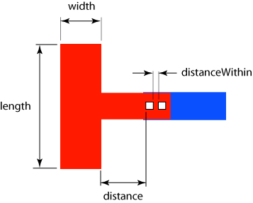

|
 |
 |
||||||
|
|
|
||||||
The built-in oacMinProtrusionNumCut layer constraint specifies the number of via cuts required for connecting a thin wire to a wide wire or pin. Two parameters specify the wide wire width and length that must be exceeded in order for the constraint to apply. An optional third parameter specifies the maximum distance from the wide metal to the first via cut. oacMinProtrusionNumCut is specified for cut layers only.
Multiple oacMinProtrusionNumCut constraints, based on different width, length, and distance triplets, can be defined in an AND constraint group. The semantics of the AND type constraint group require that all constraints in the group must be met. The series of constraints is ordered first by width, then by length, and then by distance.
This constraint applies when the width of the wide wire is greater than the width parameter value, the length of the wide wire is greater than the length parameter value, and optionally, when the distance from the wide wire to the first via cut on the protruded piece of metal is less than the distance parameter value.
| Constraint type: | oaLayerConstraint |
| Value types: | oaIntValue |
| Database types: | oaDesign, oaTech |
| Object types: | oaAppObject |
The following value types are supported by this constraint:
This oaIntValue specifies the number of cuts required.
Units: Count
The following parameters are supported by this constraint:
| Name | Value Type | Units | Default | Description | ||||||||
|---|---|---|---|---|---|---|---|---|---|---|---|---|
| width oacWidthConstraintParamType |
oaIntValue | DBU | (Required) |
This parameter specifies the width value against which the wire width is compared. |
||||||||
| length oacLengthConstraintParamType |
oaIntValue | DBU | (Required) |
This parameter specifies the length value against which the wire width is compared. |
||||||||
| distance oacDistanceConstraintParamType |
oaIntValue | DBU | None |
This parameter specifies the distance value against which the distance from the wide wire to the first via cut on the protruded piece of metal is compared. |
||||||||
| oaArea oacAreaConstraintParamType |
oaIntValue | DBU Square | None |
The number of cuts can also depend on the area of the wires. If width < width of default routing wire and is specified along with area, the minimum cut requirement on the routing vias varies as per the area of the routing wire on the layer. If only area and width are specified, this rule checks only the thin wire connected to a wide-wire whereas the wide-wire is not checked |
||||||||
| neighborLayerMetal oacNeighborLayerMetalConstraintParamType |
oaIntValue | Enum | UpperLowerLayerMetalType |
This parameter specifies the cut layers to which this constraint applies. If this parameter is not specified, the constraint applies to both upper and lower metal layers. This parameter is represented by an oaNeighborLayerMetalType enumeration:
|

In general, wide wires carry more current. If you are transitioning between two wide layers, an adequate number of via cuts are required to carry the equivalent amount of current. In addition, having many via cuts instead of just one increases reliability. Air pockets can be created in the metal during processing, and over time, these pockets tend to move towards the vias. While an open results if the pocket moves under one via, the first via stops the pocket from drifting, and having additional vias allows the circuit to continue operating.
Copyright 2002 - 2010 Cadence Design Systems, Inc.
All rights reserved.